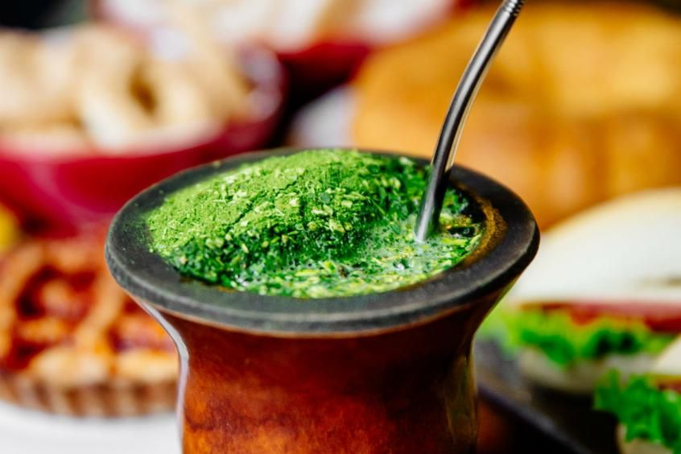
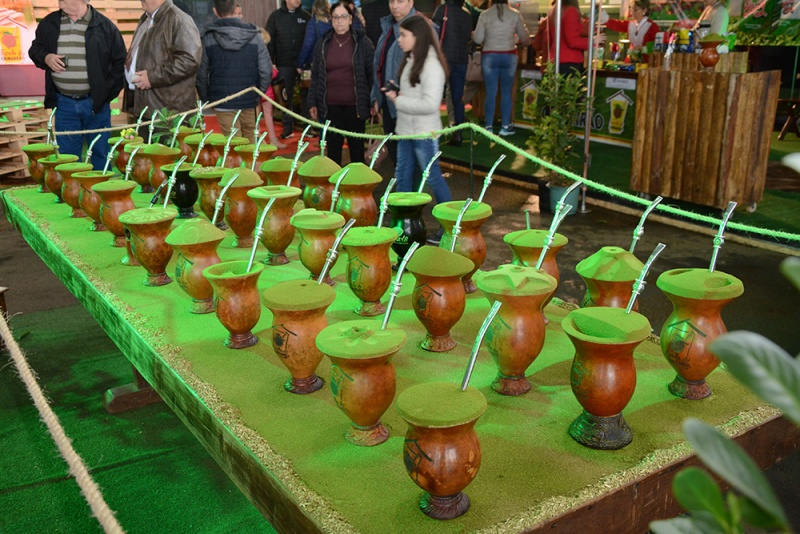

Sejam Bem Vindos ao meu Site.
O chimarrão é uma bebida tradicional do Cone Sul da América do Sul, feita com erva-mate moída (Ilex paraguariensis) e água morna ou quente, consumida em uma cuia com o auxílio de uma bomba.

Contexto histórico
O chimarrão se originou nas terras de Guairá, na região que hoje compreende o estado do Paraná, a partir dos povos indígenas Guaranis. O hábito se desenvolveu pelo uso de folhas nativas de erva-mate infusionadas em água quente e consumidas em um pequeno porongo com um canudo de taquara, expandindo-se depois pela ação dos jesuítas e pela economia tropeira.
Importancia cultural
O chimarrão é um símbolo central da identidade cultural do Paraná, especialmente na Região Sul e nos Campos Gerais. Ele representa a hospitalidade, o respeito às tradições tropeiras e a união familiar, sendo reconhecido oficialmente como patrimônio cultural imaterial do estado.

Curiosidades
Curiosidade 1
O nome "chimarrão" vem da palavra em espanhol cimarrón, que significava algo bruto ou selvagem. Os colonizadores usaram esse termo porque os indígenas tomavam a erva-mate pura e amarga, sem misturar açúcar, diferentemente do costume europeu com outras infusões.
Curiosidade 2
Chimarrão não deve passar de 70°C (o ideal fica entre 60°C e 65°C). Usar água fervendo queima a erva-mate, deixa a bebida muito amarga e pode machucar a boca e a garganta.